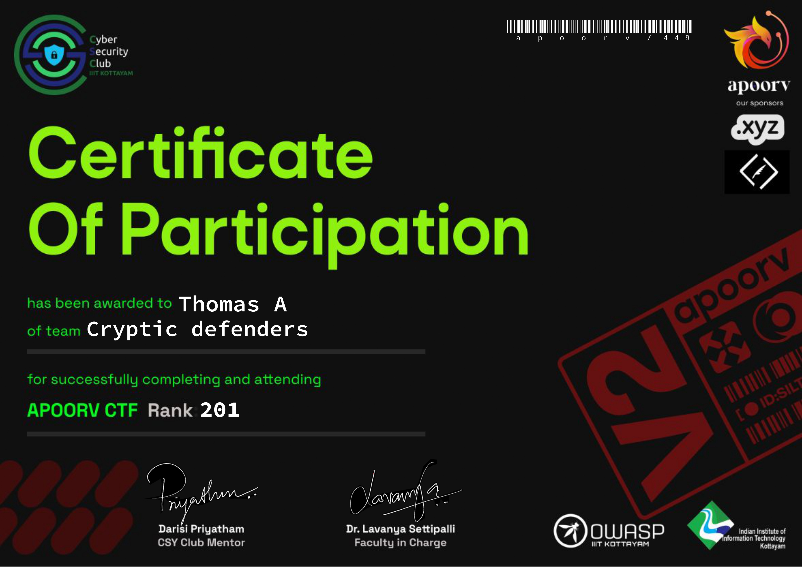

Event Type: Capture The Flag (Jeopardy-style)
Date: March 22-24, 2024
Mode: Online
Achieved 201st rank out of 1500 teams in the prestigious Apoorv Capture The Flag (CTF) 2024, organized by IIIT Kottayam. Participating as a solo competitor, I tackled a series of challenging cybersecurity problems, demonstrating expertise, resilience, and a passion for innovation in the cyber domain.
Achieved 201st rank out of 1500 teams in the prestigious Apoorv Capture The Flag (CTF) 2024, organized by IIIT Kottayam. Participating as a solo competitor, I tackled a series of challenging cybersecurity problems, demonstrating expertise, resilience, and a passion for innovation in the cyber domain.
This event served as a testament to my ability to independently navigate advanced cybersecurity challenges, underscoring my passion for learning and growing in this dynamic field.